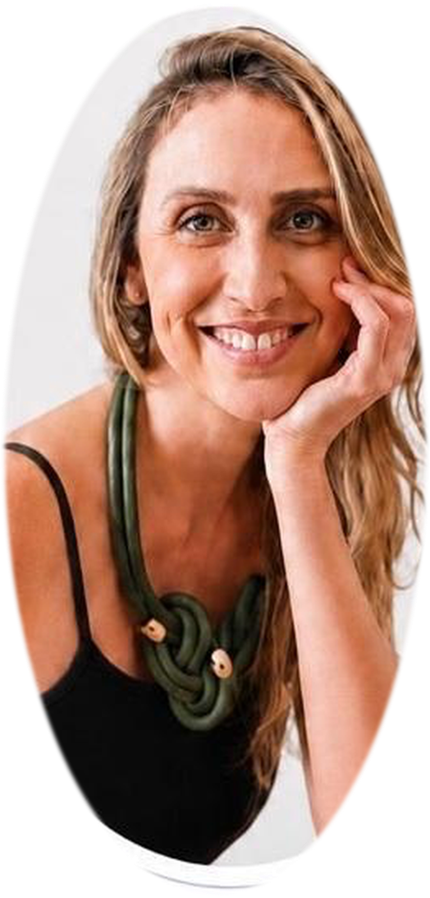

Instituto EPAP
Formação confirmada
Avanços na
Consultoria
de Amamentação
de Amamentação
Formação B-learning
 Dr.ª Vanessa Felipe de Deus
Formadora
Dr.ª Vanessa Felipe de Deus
Formadora
Informações
01
Carga horária total20 horas
02
ModalidadeB-learning · Zoom
03
Datas online14 e 16 de setembro de 2026
04
Datas presenciais19 e 20 de setembro de 2026
05
Local presencialPorto
Formadora

Dr.ª Vanessa Felipe de Deus
Formadora
Destinatários: Terapeutas da Fala e estudantes do 4.º ano da
Licenciatura em Terapia da Fala.
Formação confirmada
Inscrições e informações
www.institutoepap.com